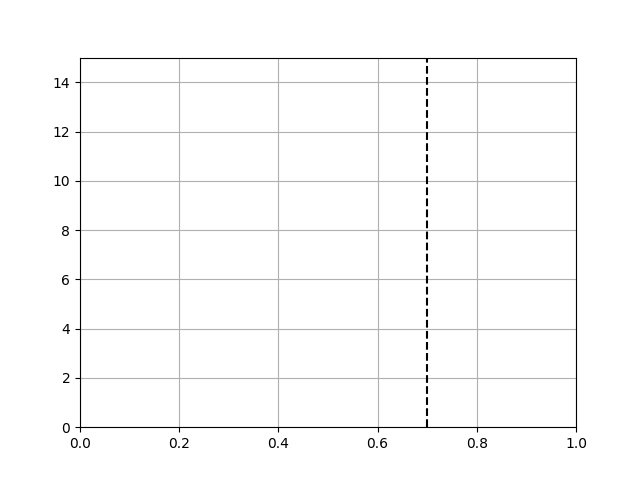

Version 3.1.3
Note
Click here to download the full example code
This animation displays the posterior estimate updates as it is refitted when new data arrives. The vertical line represents the theoretical value to which the plotted distribution should converge.
import math
import numpy as np
import matplotlib.pyplot as plt
from matplotlib.animation import FuncAnimation
def beta_pdf(x, a, b):
return (x**(a-1) * (1-x)**(b-1) * math.gamma(a + b)
/ (math.gamma(a) * math.gamma(b)))
class UpdateDist(object):
def __init__(self, ax, prob=0.5):
self.success = 0
self.prob = prob
self.line, = ax.plot([], [], 'k-')
self.x = np.linspace(0, 1, 200)
self.ax = ax
# Set up plot parameters
self.ax.set_xlim(0, 1)
self.ax.set_ylim(0, 15)
self.ax.grid(True)
# This vertical line represents the theoretical value, to
# which the plotted distribution should converge.
self.ax.axvline(prob, linestyle='--', color='black')
def init(self):
self.success = 0
self.line.set_data([], [])
return self.line,
def __call__(self, i):
# This way the plot can continuously run and we just keep
# watching new realizations of the process
if i == 0:
return self.init()
# Choose success based on exceed a threshold with a uniform pick
if np.random.rand(1,) < self.prob:
self.success += 1
y = beta_pdf(self.x, self.success + 1, (i - self.success) + 1)
self.line.set_data(self.x, y)
return self.line,
# Fixing random state for reproducibility
np.random.seed(19680801)
fig, ax = plt.subplots()
ud = UpdateDist(ax, prob=0.7)
anim = FuncAnimation(fig, ud, frames=np.arange(100), init_func=ud.init,
interval=100, blit=True)
plt.show()
Keywords: matplotlib code example, codex, python plot, pyplot Gallery generated by Sphinx-Gallery